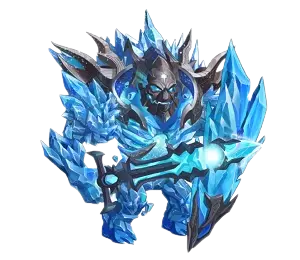

Guia do Super Titã Araji Hero Wars Mobile
- Por: Alexandre Domingos. .
| Atributos Principal |
|---|
| Atributos |
| Posição: Linha do Meio |
| Função:Super Titã Atirador |
| Elemento Principal: Fogo |
| Como Obter Pedras de Alma: Eventos, Esfera de Invocação |
| Tier List 2024 |
|---|
| Tier List |
| Tier List 2024 do Titã: S |
| Tier List 2024 de Masmorra: S |
Estratégia de como usar Titã Araji
Araji, o Super Titã do elemento fogo, possui duas habilidades formidáveis. Em primeiro lugar, sua habilidade passiva acelera os aliados em 30% por oito segundos, aumentando a geração de energia da sua equipe e permitindo ataques rápidos contra os inimigos. Em segundo lugar, o Ultimate de Araji libera um feixe ardente em direção aos inimigos na linha de frente, causando danos substanciais.
Incluir Araji em sua formação de Titãs pode alterar significativamente os resultados das batalhas. Ele se integra facilmente em várias equipes de Titãs durante as guerras, mostrando-se especialmente eficaz ao lado do aliado do elemento fogo, Ignis, que amplifica o dano aos Titãs aliados.
No entanto, Araji possui vulnerabilidades, principalmente contra o Titã do elemento água, Sigurd, que ativa um escudo tornando-se invencível por alguns segundos. Além disso, ele enfrenta dificuldades contra Titãs mais recentes que possuem defesas aprimoradas contra inimigos tradicionais. Araji enfrenta dificuldades específicas contra o Titã tanque Brustar, cujo escudo reflete todo o dano recebido de volta para Araji.
Para maximizar a eficácia de Araji, considere suas sinergias e fraquezas ao formar a composição da sua equipe. Ao planejar em torno de seus pontos fortes e mitigar suas vulnerabilidades, você pode liberar todo o potencial de Araji no campo de batalha.
Análise: Titã Araji na Masmorra
Araji demonstra uma força excepcional em cenários de masmorra, especialmente quando está no seu máximo potencial. Nesta fase, ele se torna capaz de apoiar efetivamente uma equipe baseada em fogo, muitas vezes carregando-os sozinho por vários andares.
A estratégia recomendada envolve a incorporação de Araji em equipes de masmorra de 5 contra 5 ao lado de Titãs como Hyperion, Avalon e Sigurd. Esta composição visa aproveitar as habilidades de Araji para restaurar a vida dos Titãs tanque, com um foco especial no suporte ao Titã tanque Angus. No entanto, para situações que exijam suporte adicional para a sobrevivência de Moloch, é aconselhável substituir Araji por Iyari.
Esta abordagem estratégica maximiza a utilidade de Araji dentro dos encontros da masmorra, enfatizando seu papel em sustentar as unidades de linha de frente da equipe e garantir sua longevidade ao longo da exploração da masmorra. Ao selecionar cuidadosamente as composições da equipe e ajustá-las com base em desafios específicos encontrados na masmorra, os jogadores podem aproveitar os pontos fortes de Araji para superar obstáculos e progredir eficientemente pelos andares da masmorra.
Pontos Positivos e Negativos de Araji
Pontos Positivos
- Super Titã com 2 habilidades
- Acelera aliados em 30%
- Causa muito dano nos inimigos
- Forte contra titãs da Terra
Pontos Negativos
- Fraco contra titãs da água
Prioridades de Evolução de Araji
Artefatos
Ao considerar os artefatos de Araji, é crucial priorizar o aprimoramento do Selo de Ataque. Este artefato não apenas aumenta o ataque físico, mas também aumenta a vida, o que é inestimável dada a posição de Araji da linha média para a linha de frente, onde ele frequentemente absorve consideráveis danos. Em seguida, na fila para aprimoramento, deve estar a Coroa de Fogo, destinada a fortalecer a defesa e amplificar o dano especificamente contra titãs da terra.
Por último, alocar recursos para aumentar o nível da arma de Araji torna-se imperativo para melhorar a produção de dano geral contra titãs da terra, beneficiando não apenas Araji, mas também todos os aliados de elemento fogo na batalha. Este investimento estratégico no aprimoramento de artefatos pode reforçar significativamente a eficácia de Araji no campo de batalha, garantindo que ele não apenas sobreviva, mas também prospere em cenários de combate.
| Prioridades | Artefatos | Aumento de Estatística |
|---|---|---|
| 1º | Selo do Ataque | Ataque Físico +107400, Vida +3450000 |
| 2º | Coroa do Fogo | Dano +255000 e Defesa +100500 Extra a Titãs de Terra |
| 3º | (Arma) Fera de Ragni | Dano Extra a Titãs de Terra +150000 |
Visuais
No momento, Araji conta com uma seleção de dois visuais de ataque físico, cada um servindo como um recurso valioso para reforçar suas capacidades ofensivas no campo de batalha. Esses visuais desempenham um papel fundamental em aprimorar sua habilidade ao enfrentar inimigos, proporcionando versatilidade e adaptabilidade para atender a diversos cenários de combate.
A disponibilidade de múltiplos visuais de ataque físico para Araji apresenta uma oportunidade para personalização estratégica, permitindo que os jogadores adaptem sua aparência ao seu estilo de jogo preferido ou requisitos táticos. Seja optando por uma abordagem mais agressiva ou focando na produção de danos sustentados, a ampla variedade de visuais capacita os jogadores a otimizar o desempenho de Araji para atender às suas preferências individuais.
Com uma seleção de dois visuais de ataque físico à sua disposição, Araji ganha uma flexibilidade e adaptabilidade aumentadas em situações de combate. Aproveitando o poder desses visuais, você pode liberar todo o potencial de Araji, maximizando sua eficácia como uma força formidável no campo de batalha.
| Prioridade | Visuais |
|---|---|
| 1ª | Ataque Físico +196800 |
| 2ª | Ataque Físico +196800 |

Guia de Habilidades de Araji
1. Habilidade Passiva: Arauto da Chama
Descrição: Araji acelera os aliados em 30% por oito segundos, aumentando a geração de energia da sua equipe e permitindo que eles ataquem os inimigos com mais agilidade.
Uso Estratégico: Ative esta habilidade passiva estrategicamente para melhorar a mobilidade e a agressividade da sua equipe. A velocidade aumentada pode ajudar sua equipe a reposicionar-se, perseguir inimigos ou recuar de situações perigosas.
2. Habilidade Suprema: Raio de Incineração
Descrição: Araji lança um feixe de fogo em direção aos inimigos na linha de frente, causando danos substanciais ao longo de 7,0 segundos.
Cálculo de Dano: (Ataque Físico Total x 100%) = 758.963 por segundo.
Uso Estratégico: Utilize a habilidade suprema de Araji para infligir danos significativos aos inimigos, especialmente aqueles na linha de frente. Essa habilidade pode ajudar a romper as defesas inimigas e enfraquecer unidades na linha de frente.
3. Estratégias Avançadas:
- Composição da Equipe: Araji tem boa sinergia com várias equipes de Titãs em guerras, especialmente com aliados do elemento fogo como Ignis, que podem amplificar o dano aos Titãs aliados. Considere a compatibilidade de Araji com outros Titãs ao formar a composição da sua equipe.
- Identificação de Fraquezas: A eficácia de Araji pode ser prejudicada por Titãs do elemento água como Sigurd, cuja habilidade de escudo o torna temporariamente invencível. Esteja atento a essas combinações e elabore estratégias para superar esses obstáculos.
4. Dicas para o Sucesso:
- Priorização de Alvos: Concentre os ataques de Araji em alvos de alta prioridade, como unidades inimigas na linha de frente ou Titãs de suporte vulneráveis. Ao eliminar rapidamente ameaças-chave, você pode obter uma vantagem significativa nas batalhas.
- Temporização de Habilidades: Coordene a ativação das habilidades de Araji com a estratégia geral da sua equipe. Use Arauto da Chama para iniciar engajamentos ou retiradas, e cronometre o Raio de Incineração para obter o máximo impacto durante momentos críticos da batalha.
Com um sólido entendimento das habilidades de Araji e insights estratégicos sobre seu uso, você pode utilizar efetivamente este formidável Titã em Hero Wars, liderando sua equipe para a vitória no campo de batalha.
Araji em Batalhas
Forte Contra
| Angus | Eden | Avalon | Nova | Moloch |
Araji Melhores Counters
| Counters | O que acontece |
|---|---|
 Sigurdo |
Sigurdo levando um escudo que o torna invencível por 5 segundos, dessa forma bloqueia o ataque da Ultimate de Araji. |
 Moloch |
Se Araji estiver posicionado na linha de frente ao lado do tanque aliado, pode ser atingido pela Ultimate de Moloch e ficar atordoado por 5 segundo. |
 Mairi |
A Ultimate de Mairi reduz o ataque dos inimigos em 40% por 8 segundos, dessa forma, Araji causa menos dano aos inimigos tanques da linha de frente. |
| Mort amaldiçoa o inimigo com maior ataque físico reduzindo a vida e o ataque físico, como Araji tem bastante ataque físico tem chance de ser o primeiro alvo de Mort em quase todas as batalhas. |

Melhores Times de Araji
| # | Titãs |
|---|---|
| 1 | Amon, Eden, Iyari, Araji, Sigurd |
| 2 | Amon, Hiperião, Iyari, Araji, Sigurd |
| 3 | Amon, Ignis, Iyari, Araji, Moloch |
| 4 | Amon, Iyari, Araji, Nova, Angus |
| 5 | Keros, Mort, Araji, Nova, Angus |
| 6 | Keros, Mort, Iyari, Araji, Angus |
| 7 | Keros, Mort, Hiperião, Araji, Sigurd |
| 8 | Hiperião, Eden, Iyari, Araji, Moloch |
| 9 | Hiperião, Eden, Iyari, Araji, Sigurd |
| 10 | Mort, Hiperião, Eden, Araji, Angus |
| 11 | Hiperião, Eden, Araji, Nova, Angus |
| 12 | Hiperião, Eden, Araji, Nova, Moloch |
| 13 | Hiperião, Eden, Araji, Nova, Sigurd |
| 14 | Ignis, Eden, Araji, Nova, Moloch |
Conclusão do Guia do Araji
Em conclusão, Araji emerge como uma força formidável no campo de batalha, empunhando habilidades poderosas que podem mudar o rumo de qualquer encontro. Com sua habilidade passiva, Heraldo da Chama, Araji aumenta a mobilidade e a agressão de sua equipe, enquanto sua habilidade máxima, Raio de Incineração, causa um dano substancial aos inimigos, especialmente aqueles na linha de frente. Ao incorporar Araji estrategicamente nas equipes de Titãs, os jogadores podem aproveitar seus pontos fortes e superar desafios formidáveis no Hero Wars. Seja liderando o ataque ou apoiando aliados, Araji prova ser um ativo valioso, pavimentando o caminho para a vitória no campo de batalha.
 Éden
Éden Hiperião
Hiperião Keros
Keros